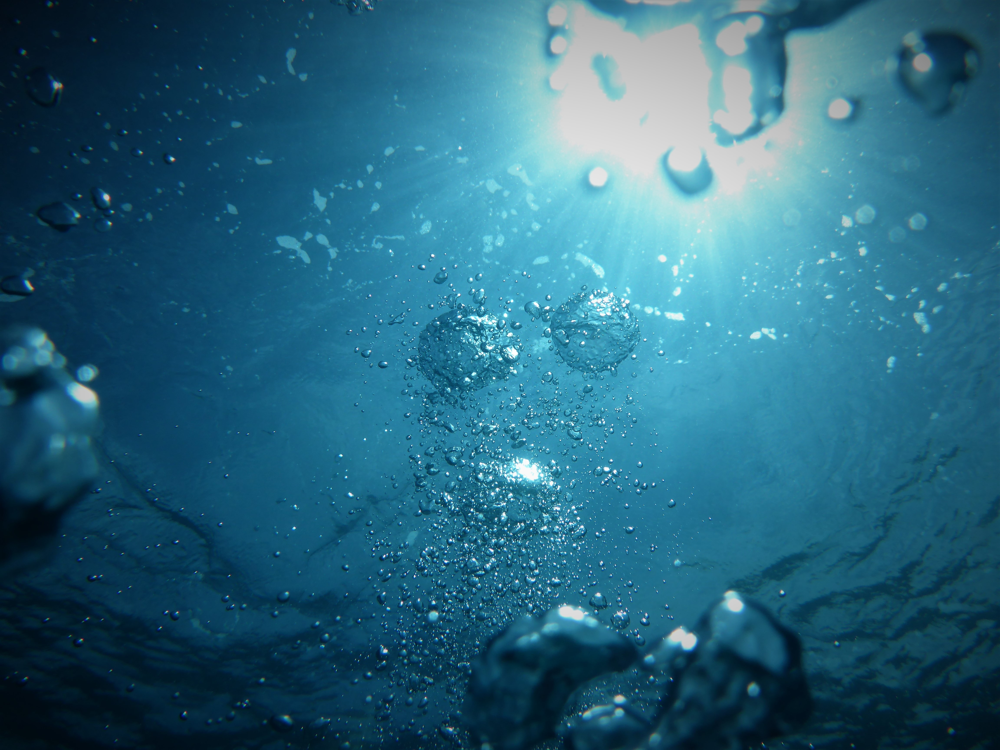

- SURVIVAL Strategy
- water
- Food
- shelter
water
You know water is vital to emergency preparedness — you can only survive three days without it — and you probably know it can be hard to get consistent and clean water in a SHTF disaster.
You can’t depend on “running to the store” at the last minute or carrying all the water you need. Unsafe drinking water causes half of all the occupied hospital beds in the world and over two million preventable deaths each year. Prepare now and avoid the pain later.
We spent 48 hours researching and reviewing over 70 portable survival water filters for preppers so that you don’t have to — and more importantly, so that you don’t buy a bad product and die.
This review covers the kind of water purification products you’d keep in your bug out bag and get home bag emergency kits, perhaps with some extras in your home supplies or for everyday carry.
These products should be one of your very first purchases in prepping.
Full list of product reviews and details on prepping tips, water risks, etc. are below the table of contents.

Summary:
Water, especially water affected by emergencies like grid failure or flooding, contains organisms that can make you very sick at the worst possible time.
Water can be treated in a variety of ways: filter screens, purification chemicals (chlorination), boiling it away and recapturing the steam (distillation), reverse osmosis, UV light, or boiling. Each has its pros and cons.
We recommend using filters for basic prepping needs because it’s the best way to quickly turn wild water into drinkable water.
You should have at least two of the filters recommended in this guide in each one of your emergency bags. A mix of different types is the best, because no single product is perfect.
We recommend keeping 16-24 oz (a normal water bottle) of potable water stored in your bags at all times, that way you have something to drink in the immediate aftermath.
Your personal filter choice might come down to whether or not you care about virus protection. Viruses aren’t normally a problem in places like the US and Canada, but could be worse in an emergency or very hot climates. We think about virus protection as a nice-to-have if you can afford it.
Companies are in an arms race to have the longest filter life. Giant numbers like 50,000 gallons are under perfect scenarios with clean input water.
Capacity matters more when we’re judging numbers like 200 vs. 1,200 gallons. But once the numbers get really high, they start to matter less.
There’s no singular perfect mix of products. But do think about how your multiple layers of water treatment products can work together: can you mix and match pieces, do you have vessels for storing clean or dirty water that can attach to your filters, etc.